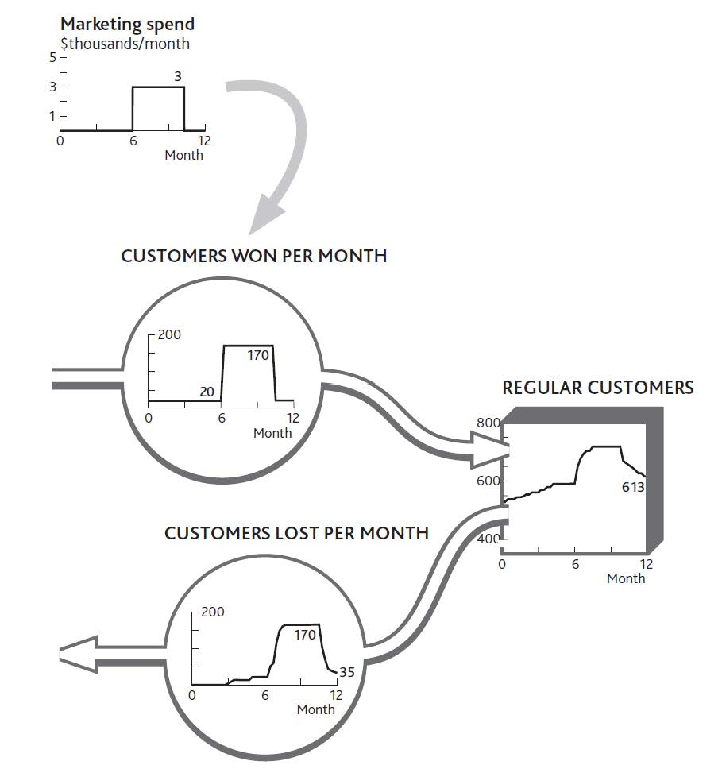
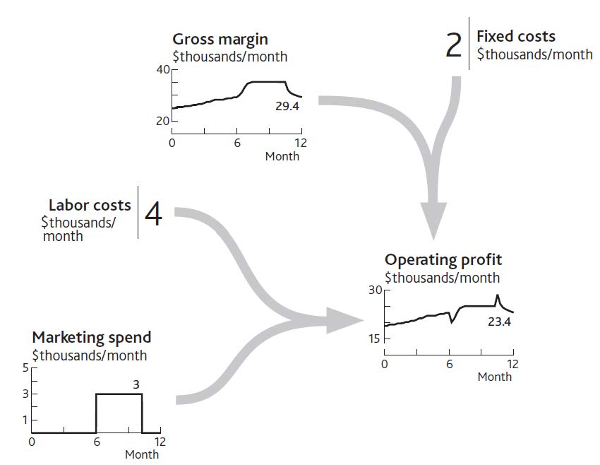
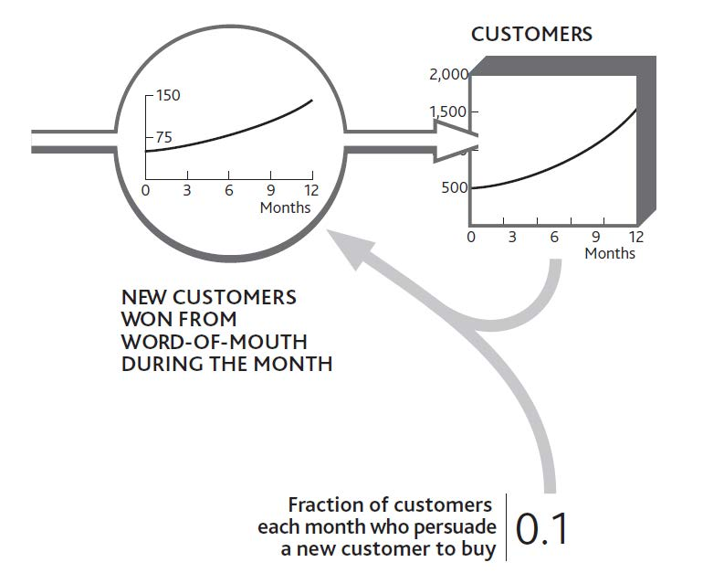
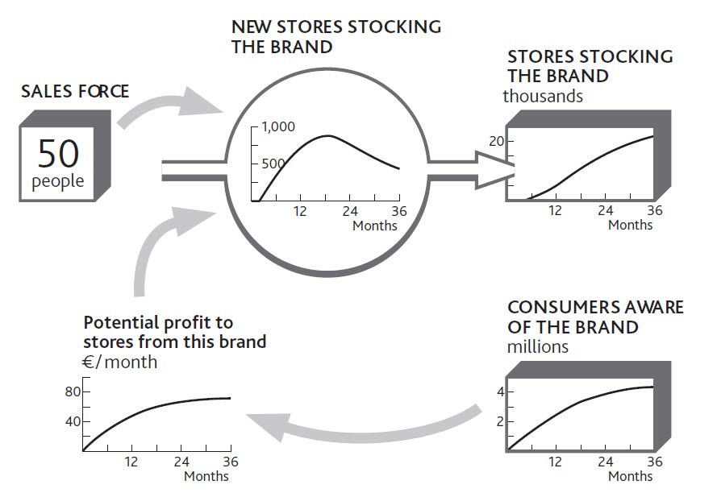
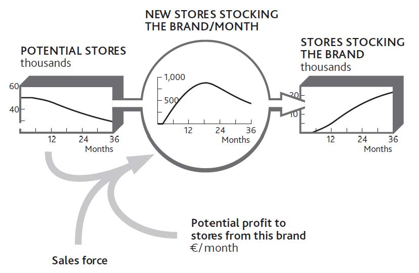
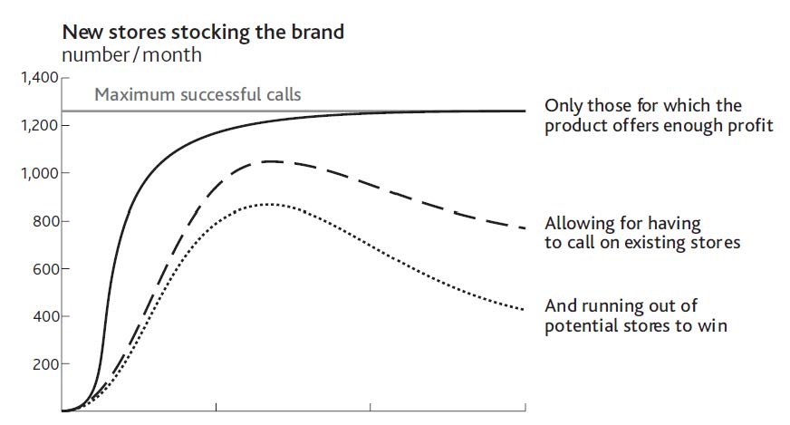
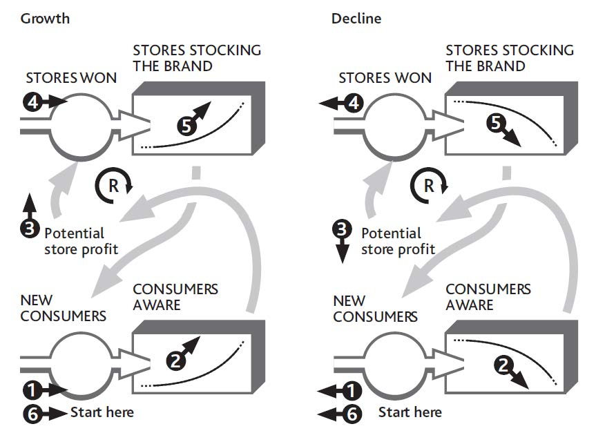
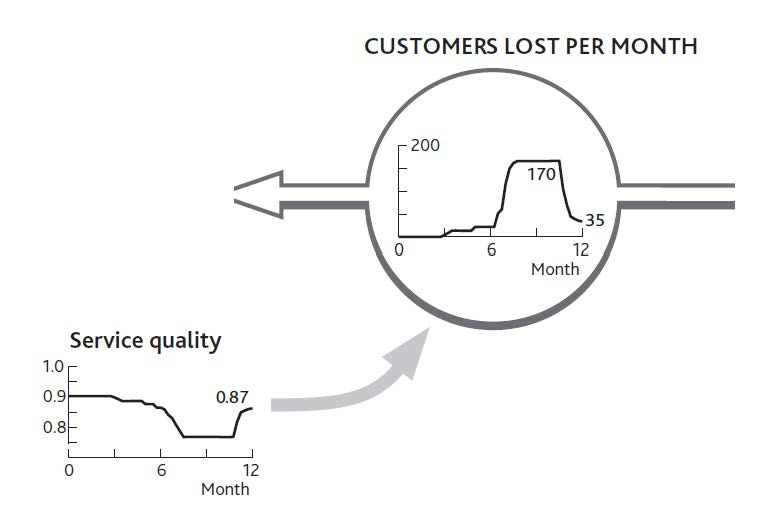
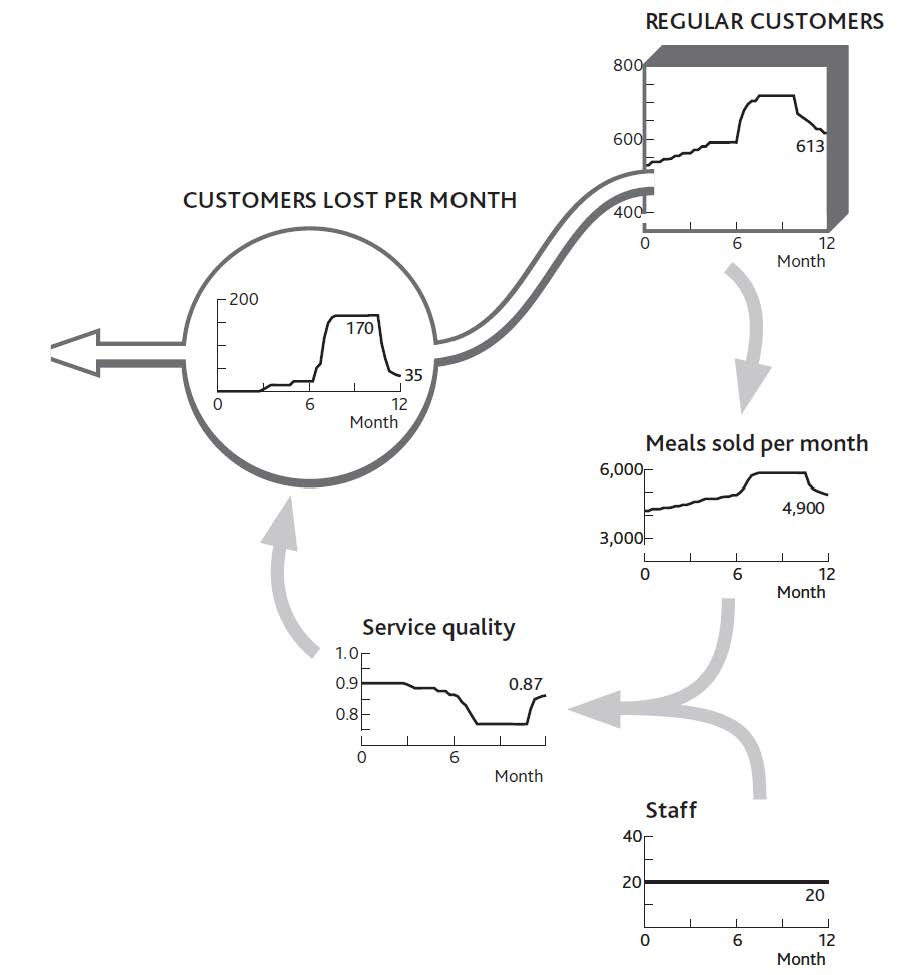

The way that resources increase or decrease through time is critical, and resources always rely on one another. Existing resources either enable growth in other resources or constrain it. This mutual reliance can even lead the whole system to collapse.
The next step is to show how these mechanisms make resources complementary and explore the implications of this interdependence over time. This chapter will do the following:
So far we have learned the following:
The next crucial question is, what drives the growth (inflowThe growth of or increase in resources.) and decline (outflowThe reduction in or decline of resources.) of resources?
There are three factors moving resources into and out of your organization:
In fact, most of your own decisions—at least those that are likely to affect performance into the future—work by affecting resource flows, either directly or indirectly. You recruit more salespeople to win customers faster, add service capacity to keep customers from leaving, take on engineers to develop products, dedicate human resource (HR) staff to hiring, and so on.
If we start training people today, for example, we do not instantly get better bottom-line performance. The training improves the overall skill of the group over whatever time it takes to cover everyone in the group. Only those people who have been trained can start to deliver improvements, and this takes time. The one impact we do see immediately, of course, is the extra cost! Consequently, it is all too common for organizations to decide on beneficial changes, only to abandon them because they do not see enough immediate benefit to continue. What often gets cut first when performance falters? Training and marketing!
Let us look back at what happened to your restaurant over the past 12 months. Figure 3.6 "The Separate Flows of Customers Into and Out of Your Regular Customer Group" showed the inflow and outflow of regular customers. The decisions involved were to increase marketing spending but then cut back later in the year (Figure 4.1 "Marketing Decisions Change the Inflow of Customers").
Note that we are not looking to explain the impact of marketing on profits, not even on sales. The immediate effect is on the customer win rate, and we need to focus on the numbers: the rate of marketing spending and how much impact it had on the rate of winning new customers. It also seems that our marketing decisions are not quite enough to account for the customer win rate, since we had a trickle of new customers even when we were spending nothing.
Figure 4.1 Marketing Decisions Change the Inflow of Customers
We must not forget that such a change in a resource flow is not the only consequence of our decisions. Many will have cost or revenue implications, too. In this case, marketing spending has an immediate impact on profits, as well as causing other changes (Figure 4.2 "The Impact of Changed Marketing Spending on Profits").
When you increased spending in month 7, profits dropped by the amount you decided to spend. Profits grew quickly after you implemented this decision, so something else must have happened. But the immediate effect was a sharp drop: no delays or bathtubs filling in this part of the system, just simple arithmetic. The same applies to the decision in month 10 to cut marketing spending. The profit rate immediately jumps by the $3,000 per month cut in marketing. Again, however, something else happens soon after to wipe out that profit increase.
Figure 4.2 The Impact of Changed Marketing Spending on Profits
Competitors and other factors also affect the flows of resources into and out of our business. Competitors can even help us develop resources, as we will see in Chapter 7 "Managing Rivalry for Customers and Other Resources". External influences are generally looked at under four categories:
We are often sloppy in our use of language about business, and since we have never been especially conscious of the bathtub behavior of resources there is a particular problem about levels and rates. We might discuss what we can do to increase the “level” of profits, say, or debate whether the “level” of marketing spending is sustainable. Wrong! Profits and marketing spending are both rates at which money is being made or spent; their units are dollars per month. The only factors that should properly be referred to as “levels” are resources, plus that rather special factor, price.
This may seem picky, but so long as we are inaccurate in the language we use, we will continue to misunderstand what is going on. And if we misunderstand, we will misdecide!
The systematic examination of these forces is known as PEST analysis. While the concept of PEST influences sounds right, that is not sufficient for strategy development. Once again, numbers matter. You need to understand the scale and timing of the changes affecting your future. Imagine you run a company producing electronic goods, and you face an economic downturn. You need to know roughly how severe it will be, at what rate it will remove potential consumers from your pool of resources, and to what level.
In addition, factors changing other markets can have powerful spin-off effects. TV viewing has fallen as viewers switched their time to online activities, with damaging consequences for advertising revenues. Internet usage in Europe has in turn been depleted by the time people spend sending text messages by mobile phone. These are both examples of quantifiable dynamics—that is, rates of change through time—concerning the influence of substitute products that feature in standard industry forces approaches to strategy (see Chapter 1 "Performance Through Time").
The most important point about what drives resource flows, however, is that current levels of resources determine the rate at which other resources fill up or drain away. This is the mechanism for which the system dynamics method is ideally suited (Sterman, 2000, chap. 8).
This is the reality of how resources work together, creating a system that can either perform strongly or constrain its own development. Interdependence can even bring about an organization’s self-destruction. Since we know that performance depends on resources, and that only flows of resource can alter these quantities through time, it follows that the only means by which management decisions can change your resources through time is by influencing what happens to the inflows and outflows.
However, as Chapter 2 "Resources: Vital Drivers of Performance" highlighted, you cannot build any resource without using resources already in place. This interdependence has two implications:
There are many examples of this principle:
In the cases listed above, if you had none of the first resource, the second would not grow at all unless some other resource could replace it. If you have no salespeople, for example, you will need agents, a Web site, or some other alternative to capture customers. If a charity has no donors, it will need government funding or some kind of endowment to carry on its work.
So how does a new business ever get started? It turns out that entrepreneurs too must have some stock of experience, contacts, and personal credibility to allow them to raise cash and hire their first staff. (Experience and credibility are intangible resources, which we will look at in Chapter 8 "Intangible Resources and Capabilities".)
The simplest case of mutual support is when a resource drives its own growth. This process can be seen in an everyday situation: cash and interest. The more cash you have saved, the faster more cash is added to it. Another obvious case is word of mouth among consumers. Our basic principle of reinforcing feedbackCurrent levels of resources that determine the rate at which other resources increase or decrease. still applies: The more consumers there are, the faster they can win new ones (provided, that is, there are plenty of potential consumers left to be won).
This is much more than a qualitative notion; as we keep emphasizing, numbers matter and can be worked out. Figure 4.3 "The Arithmetic of Reinforcing Growth From Word of Mouth" takes us back to the start of Chapter 2 "Resources: Vital Drivers of Performance" and the simple customer stock at your restaurant. Let us imagine this time, however, that there is no loss of customers at all. In fact, you are winning more, thanks to the positive word of mouth from your existing clientele. Every 10 customers you have leads to you winning 1 new customer every month. Starting with 500, you win 50 during January. February then starts with 550, so that month you win 55, and so on.
You can see just how powerful reinforcing growth can be. By the end of the year the business is growing at almost three times the rate it was at the start. This may seem an astonishing and unrealistic rate of development, but it is very common indeed—look back at Alibaba.com in Chapter 1 "Performance Through Time", or think how quickly Skype took off. The reason it seems unusual is that we do not often experience it ourselves, and other organizations we see around us may be too small to be noticed while the process is in full swing.
It seems, though, that apart from cash and people-based resources, there are few other examples that are capable of this self-replicating behavior. This is because most other resources are inanimate and just sit there unless we do something with them. So we need to turn our attention now to the way one resource drives growth in others.
Figure 4.3 The Arithmetic of Reinforcing Growth From Word of Mouth
Consider the example of the consumer brand introduced in Chapter 3 "Resources and Bathtub Behavior". Building awareness and interest in a brand is essential, but if we actually want to sell anything, we have to get stores to stock it. A new brand thus needs to drive the inflow to the resource of stores stocking the brand. What other resources are required to achieve this?
First, we need consumers who want to buy the product. Retailers will not stock a product that is unlikely to generate profits for their stores, and these profits will only arise if consumers are likely to buy. A stock of interested consumers is not enough. Retailers need to know about the product and its potential profitability and must be constantly reminded of its attractiveness relative to other uses they might have for their shelf space. This requires a sales force. In this case, then, two resources are required: consumers and a sales force. If either is missing, stores will not be won. Figure 4.4 "Growth in the Number of Stores Stocking a Brand Depends on Sales Force and Consumers" shows how these two resources drive growth in stores.
This may seem a daunting mix of numbers to get your head around, so let us think through how a product manager might estimate these numbers, based on either experience with previous brands or from seeing what competitors have accomplished.
Figure 4.4 Growth in the Number of Stores Stocking a Brand Depends on Sales Force and Consumers
Our 50 salespeople can each make about 100 calls per month; that is 5,000 calls per month in total. However, it takes several calls to persuade a store that the brand is attractive, so perhaps only one call in four might be expected to achieve a sale. At first, so few consumers want the product that stores do not see much profit to be made, so sales calls are not successful at all. As consumer demand grows, the rate of sales success climbs.
Later, stores are won increasingly slowly because we are running out of stores to win. Figure 4.4 "Growth in the Number of Stores Stocking a Brand Depends on Sales Force and Consumers" is therefore incomplete; we need to see the falling stock of potential stores as well, as shown in Figure 4.5 "Limited Potential Slows Growth in Stores Stocking the Brand".
Running out of potential stores is not the only reason for the limited win rate, however. The product manager needs to go through a few steps in order to estimate this win rate over the 2 years of the product launch (Figure 4.6 "Estimating Sales Force Success Over Time").
Figure 4.5 Limited Potential Slows Growth in Stores Stocking the Brand
Figure 4.6 Estimating Sales Force Success Over Time
The product manager can use the same process to estimate how rapidly consumers might be made aware of the brand. Two factors drive awareness: the firm’s own advertising expenditures and the brand’s presence in stores.
We now have some circularity in our reasoning. Growth in consumer awareness depends in part on the resource of stores, and growth in stores depends on the number of consumers. Putting these two together gives us a precise picture of what we mean when we say that our resources are complementary.
As we have emphasized before, the connecting arrows in these diagrams mean much more than some vague relationship between one item and another. They mean that you can estimate the value of an item at any time if you know the values of all the factors linked into it with arrows. Adding the arrow from “Potential stores” to “New stores stocking the brand/month” in Figure 4.5 "Limited Potential Slows Growth in Stores Stocking the Brand" is therefore critical: You cannot estimate the rate of new stores without knowing the potential.
In the case of winning stores for a brand, it is relatively easy to identify and confirm the main factors in the win rate: namely, stores that will profit from the brand, the number of salespeople, and available stores. The explanations are not always so clear, however, so you will need to discuss with colleagues the factors most likely to drive a flow.
Imagine that staff turnover is causing you concern. There may be many reasons for this. How have your salaries changed, as well as those offered by your competitors? Has there been a change in the number of other job opportunities? Have competitors been increasing their hiring efforts? Has there been a change in your employees’ workload?
It is possible that by putting the history charts for these items around the flow you want to explain (staff lost per month), you will easily see what has been happening and why. However, it may be necessary to go further. One place to start is to ask people why they chose to act as they did. In this case, exit interviews will provide some information on why staff turnover is happening.
It may be that you will need to use statistical methods to see if your expected drivers really do explain the resource flow rate. Beware! The accumulating behavior of resources makes it unsafe to use correlation to explain resource levels. Remember that today’s customers are precisely the sum of all you have ever won minus all you have ever lost, so no other causal explanation can be meaningful, however good the correlation may seem to be.
However, you can safely use correlation to confirm possible causes of resource flow rates. One retail bank found an astonishingly close relationship between certain factors and the rate at which any branch was likely to see customers closing their accounts. Among these strong causes was the bank’s history of making mistakes with customers’ accounts.
As long as the growth rate continues, this self-reinforcing mechanism generates positive expansion. In the absence of any constraints, this growth will be exponential, increasing by the same proportion in each period. This is clearly a favorable situation for any firm to create, but there are three precautions to note:
Reinforcing growth is not free. Something has to create the resource in the first place. In our brand example, this kick start came from the advertising, without which nothing would have happened. Salespeople can only persuade stores to stock the brand if consumers are interested. In practice, salespeople might conceivably persuade stores to take a product on the promise that consumers will become interested, even if they are not yet. But this relies on the reputation and credibility of the sales force—another intangible resource that has to be built. There is no free lunch!
Reinforcing growth cannot continue indefinitely. Growth will inevitably come up against limits, either external (no more customers to win) or internal (not enough capacity to supply new customers). Even apparently unstoppable firms like McDonald’s and Coca-Cola hit the limit at some point, although that limit can be very high indeed.
Reinforcing feedback is capable of driving collapse. This problem arises when a decline in one resource leads to another resource draining away. This may in turn mean lower marketing spending, more people leaving the business to go to competitors, damage to the firm’s reputation, and possibly other related problems. In essence, the difficulties facing the business escalate and reinforce each other.
Organizations that rely on professional staff run the risk of self-reinforcing collapse. Examples arise in both businesses and public services: lawyers in a legal firm, information technology (IT) department staff, hospital nurses, police officers, and so on. Collapse happens through a sequence of events. Staff can initially cope with the demands made on them while their workload remains constant. However, this group gradually depletes through normal staff turnover. As numbers decline, the pressure on those who remain increases, leading to further turnover and yet more pressure.
In such cases, the system needs at least a temporary reprieve from the pressure to arrest the loss of staff. This can come from two principal sources: using temporary staff such as contractors, or reducing the workload, either by turning work away or simplifying what is done. These fixes come with their own dangers. Contract staff can actually make matters worse by needing guidance from the already pressured staff and by further demoralizing them. Turning work away may be advisable, but it can be an uphill struggle to persuade managers to do this when they are already facing business collapse.
Work pressure is not the only trigger for collapse. One consulting firm serving the finance industry lost just a few key clients. With less rewarding projects to work on, and with their professional reputation to worry about, key staff resigned and moved to competing firms. This loss of key consultants caused still faster loss of clients, some of whom actually moved with the consultants to the same competitor! And so the process continued until the firm effectively collapsed.
Critical to solving this problem is to decide quickly what to do, when, and how much. Diagrams like those in Figure 4.4 "Growth in the Number of Stores Stocking a Brand Depends on Sales Force and Consumers" and Figure 4.5 "Limited Potential Slows Growth in Stores Stocking the Brand" clarify the problem and shed light on the path out of trouble. They also provide a map of progress as the solution develops.
It is better, of course, to have a plan for solving these troubles before they ever arise. But best of all is to have a mutually supporting set of resources whose interdependence is so positively embedded that the risk of a complete collapse is always remote.
To see if your situation will reinforce growth or decline among one or more of your resources, the question to ask is, If this resource grows (or declines), will it have consequences that lead to further growth (or decline)?
We know these mechanisms as virtuous or vicious cycles. To find out, sketch the resources, flows, and intervening factors, and work through the story.
Figure 4.7 "Checking for Self-Reinforcing Growth and Decline Among Interdependent Resources" tells the story for our consumer brand. Starting at the bottom left, if the number of consumers increases, the potential profit available to stores increases, causing more to stock the product. As it becomes more visible, additional consumers are won more quickly. However, do not forget the self-limiting effect that comes from running out of both resources.
Figure 4.7 Checking for Self-Reinforcing Growth and Decline Among Interdependent Resources
We now return to the other class of interdependence between resources, where an inadequate quantity of one resource slows and stops the growth of others. We can illustrate this by returning to the example of your restaurant.
Figure 3.4 "How Changing Customer Numbers Drives Performance Over Time (for clarity, some items are not shown)" showed a slowdown in customer growth, which even your strong marketing efforts failed to increase for more than a short time. Figure 3.6 "The Separate Flows of Customers Into and Out of Your Regular Customer Group" explained separately the inflows and outflows that led to this. The questions we are left with are (a) Why did your customer growth stall in the early months? and (b) Why did customers leave in such high numbers from August through November? The clue lies in what happened to staff numbers during the year: nothing! You had 20 staff members throughout.
Customer numbers were fairly stable until you did your big marketing push, although by June you were losing nearly as many customers each month as you were gaining. It seems that your staff were at the limit of their ability to cope. This is borne out by the information on customer service quality shown in Figure 4.8 "The History of Service Quality and Customer Losses". When service quality was high, customer losses were low, but when service quality took a dive, customer losses shot up.
Data on service quality, by the way, are not hard to estimate, even if you do not research them scientifically. Staff tips, complaints, and customer comment cards all offer simple information from which to estimate service quality. The resulting numbers may not be precise, but they are good enough to explain what’s happening and guide corrective action.
So now we can pursue the causal linkages and ask why service quality suffered. It seems your staff could only cope with the 4,000 meals per month bought by your original 500 customers. When sales jumped to well over 5,500 per month thanks to your marketing efforts, service quality dropped sharply: Your resources were badly out of balance.
If we connect parts of Figure 3.5 "The Net Flow of Customers Into and Out of Your Regular Customer Group" with Figure 4.8 "The History of Service Quality and Customer Losses", we can see how this story played out (Figure 4.9 "Why Service Quality Suffered Then Recovered") and explain what happened to your restaurant over the past year.
Figure 4.8 The History of Service Quality and Customer Losses
There are always limits to how far this cycle of reinforcing growth can go. Balancing mechanisms set in at some point: either you run out of potential resource or you run up against constraints caused by finite levels of other resources. Such balancing feedbackMechanisms that, when detected and managed, can reverse the restrictions on growth or the potential for collapse within an organization. structures can also be discovered by tracing back what is causing any resource flow to run at the rate it is. Detecting and managing these balancing effects can remove brakes on growth and protect organizations against overshoot or runaway collapse.
Figure 4.9 Why Service Quality Suffered Then Recovered
Here are some tips for analyzing the interdependence between resources and using your resulting understanding to manage their development:
It is possible that putting the history charts for these items around the flow you want to explain will clarify sufficiently what has been happening and why. But it may be necessary to go further:
Eventually, you will get back to existing resources, and you will have completed the chain of interdependence. Staff turnover will perhaps be explained by current number of customers (driving workload) and existing number of staff. You can now work around all these explanations for the resource flow with your colleagues and assess the likely effectiveness of any options that may be available to manage that flow into the future.